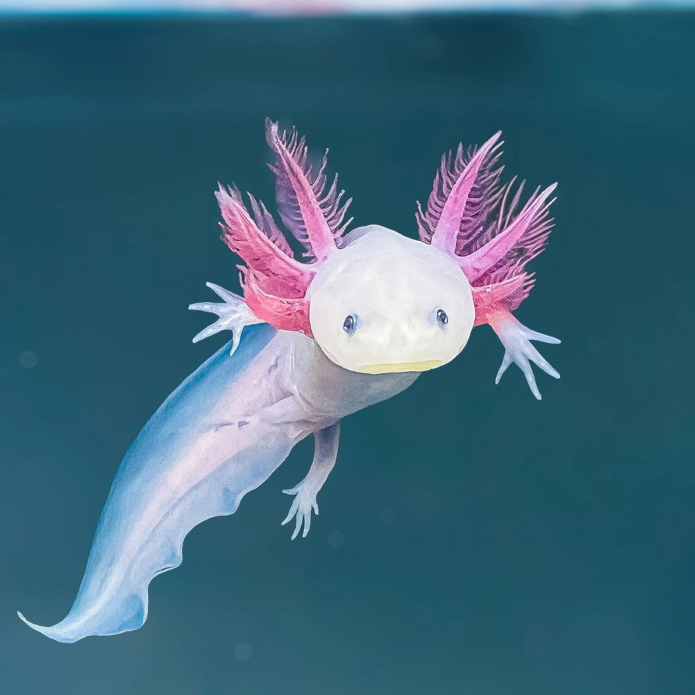

Axolotl
Makanan Favorit
Cacing, udang kecil, dan ikan kecil. Mereka menangkap mangsa dengan isapan cepat.
Habitat
Hanya di Danau Xochimilco, Meksiko — dan kini hampir punah di alam liar. Mereka hidup di air tawar yang sejuk dan berlumpur.
Keunikan
Axolotl adalah satu-satunya amfibi yang 'tidak pernah mengalami metamorfosis' — mereka tetap berinsang seumur hidup! Mereka juga punya kemampuan regenerasi luar biasa: bisa tumbuh kembali seluruh anggota tubuh, bahkan otak!